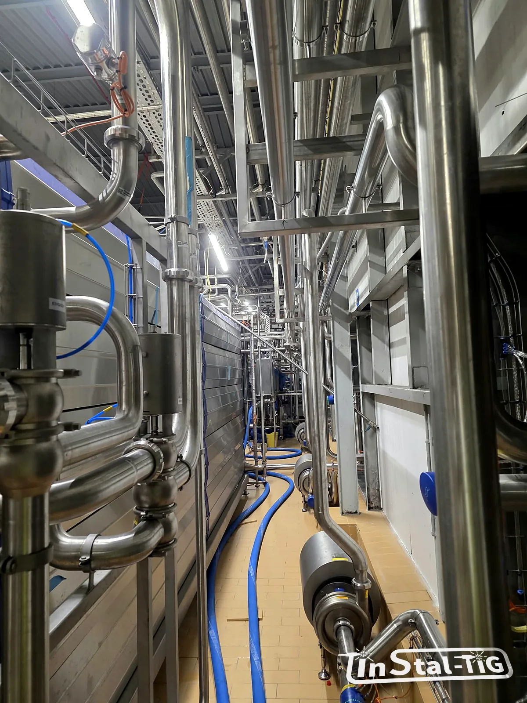

Stal nierdzewna w przemyśle chemicznym: kiedy 316L to za mało (1.4539, duplex)

W przemyśle spożywczym 316L (1.4404) zwykle wystarcza z zapasem. W chemii bywa inaczej: gorące solanki, kwas siarkowy czy media z dużą zawartością chlorków potrafią zniszczyć instalację z 316L w kilka miesięcy. Wtedy w grę wchodzą stale wyżej stopowe: austenityczna 1.4539 (904L) albo stale duplex, takie jak 1.4462. Wyjaśniamy, czym się różnią i kiedy warto o nich pomyśleć.
Kiedy 316L przestaje wystarczać?
- Dużo chlorków i wysoka temperatura: solanki, woda morska, niektóre wody chłodnicze. Rośnie ryzyko wżerów, korozji szczelinowej i pękania naprężeniowego (o mechanizmach piszemy w artykule o korozji stali nierdzewnej).
- Kwasy, np. siarkowy czy fosforowy w niektórych stężeniach i temperaturach.
- Środki utleniające z chlorem, np. podchloryn, które niszczą warstwę pasywną.
- Wysokie naprężenia i ciśnienia, gdzie przydaje się stal o większej wytrzymałości.
O tym, czy 316L wystarczy, decyduje cały zestaw warunków: skład i stężenie medium, temperatura, zawartość chlorków, pH, a nawet to, czy medium płynie, czy stoi.
PREN: szybkie porównanie odporności na chlorki
Odporność na korozję wżerową porównuje się wskaźnikiem PREN = Cr + 3,3 · Mo + 16 · N (zawartości w procentach). Im wyższy, tym lepiej stal znosi chlorki. Orientacyjne wartości:
| Gatunek | Rodzaj | PREN (orientacyjnie) |
|---|---|---|
| 1.4301 (304) | austenityczna | ok. 18–20 |
| 1.4404 (316L) | austenityczna | ok. 23–26 |
| 1.4162, 1.4362 | duplex „lean” | ok. 25–27 |
| 1.4539 (904L) | austenityczna, wysokostopowa | ok. 32–35 |
| 1.4462 (2205) | duplex | ok. 34–36 |
| 1.4410 (2507) | superduplex | powyżej 40 |
PREN to tylko punkt wyjścia. Nie mówi nic o odporności na kwasy, a o doborze w konkretnym medium decydują tabele odporności producentów stali i doświadczenie z podobnych instalacji.
1.4539 (904L): więcej niklu i molibdenu
To stal austenityczna z dużą zawartością niklu (ok. 24–26%), molibdenu (ok. 4–5%) i z dodatkiem miedzi. Dzięki temu:
- jest wyraźnie odporniejsza od 316L na chlorki,
- dobrze znosi rozcieńczony kwas siarkowy i fosforowy, do których była projektowana,
- wysoka zawartość niklu poprawia odporność na pękanie korozyjne naprężeniowe,
- spawa się i obrabia podobnie jak inne stale austenityczne, choć wymaga staranności i właściwego materiału dodatkowego.
Duplex 1.4462: mocniejsza i odporniejsza
Stal duplex ma mieszaną strukturę: mniej więcej po połowie austenitu i ferrytu. Daje to kilka zalet:
- wyższą wytrzymałość: granica plastyczności jest mniej więcej dwa razy wyższa niż w 316L, więc przy tym samym ciśnieniu można czasem zastosować cieńsze ścianki,
- dobrą odporność na pękanie naprężeniowe w środowisku chlorków,
- odporność na wżery zbliżoną do 904L lub wyższą (PREN ok. 34–36).
Są też ograniczenia. Stale duplex nie nadają się do pracy w wysokich temperaturach (zwykle stosuje się je do ok. 250–300 °C, bo wyżej stają się kruche). Spawanie wymaga kontroli ilości ciepła i właściwego drutu, żeby zachować prawidłowe proporcje ferrytu i austenitu w spoinie. To nie jest stal, którą można spawać „jak 316L”.
Warto wiedzieć: nie każde agresywne medium da się opanować stalą nierdzewną. Na przykład kwas solny atakuje praktycznie wszystkie popularne gatunki, także 904L i duplex. W takich przypadkach sięga się po inne materiały: stopy niklu, tytan, tworzywa albo wykładziny.
Koszt a trwałość
Stale wyżej stopowe są droższe od 316L, bo zawierają więcej niklu i molibdenu, a do tego dochodzą droższe kształtki i materiały spawalnicze. Dlatego warto policzyć, ile kosztowałaby awaria, przestój i wymiana instalacji z 316L. Często opłaca się połączenie: gatunek wyżej stopowy tylko w miejscach najbardziej narażonych (np. gorące odcinki z chlorkami, wymienniki), a 316L tam, gdzie warunki są łagodniejsze. Podobnie jak przy wyborze między 304 a 316L, o którym piszemy w artykule Stal 304 czy 316L?
Co podać, gdy pytasz o instalację dla chemii?
- pełny skład medium i stężenia, także zanieczyszczeń (np. chlorków),
- zakres temperatur i ciśnień, w tym podczas mycia i rozruchu,
- pH i to, czy medium stoi w instalacji, np. w przerwach,
- dotychczasowe doświadczenia: z czego była zrobiona stara instalacja i jak się zużyła,
- wymagania dotyczące dokumentacji i badań przy odbiorze (zobacz poradnik o odbiorze instalacji).
Ostateczny dobór materiału do agresywnego medium to decyzja projektanta i technologa procesu. Z takimi danymi możesz od razu zapytać o wycenę przez formularz Wycena online.
Instalacja dla agresywnego medium?
Zadzwoń albo napisz. Opisz medium, temperatury i dotychczasowe doświadczenia, a porozmawiamy o materiale i przygotujemy wycenę.
Zadzwoń: 667 466 431 Napisz e-mail Wycena online